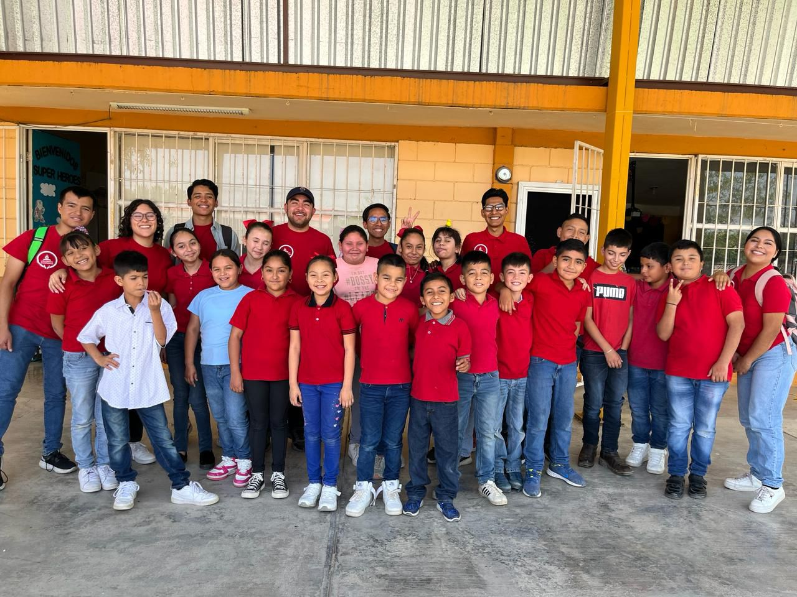

Evidencias auténticas de formación profesional
Cada competencia está vinculada con una reflexión crítica, evidencias concretas y proyección hacia el ejercicio profesional.
Decisiones basadas en principios bíblicos
Proyecto una vida profesional, personal y familiar en el marco de un compromiso moral y misional. Busco ejercer un firme criterio respecto a la música que selecciono, escucho, produzco o ejecuto.
Vida equilibrada e íntegra
Optimizo el tiempo, las finanzas, las habilidades y la salud. He desarrollado un gusto sano por la recreación y las manifestaciones artísticas y culturales como parte de una vida integral.
Experiencia misional internacional
Trinidad y Tobago (cosmovisión islámica), Egipto (Nile Union Academy) y Marruecos (alcance médico y evangélico) han ampliado mi perspectiva y sensibilidad intercultural.
Enseñanza musical en contextos diversos
He sido maestro de piano, enseñado en coros de personas sin formación musical previa y dado clases de teoría musical y solfeo desde preescolar hasta preparatoria.
Reflexión: El acompañamiento del desarrollo del niño, el control de grupo y el storytelling como recurso pedagógico han sido mis grandes aprendizajes.
Proyección: Seré docente comprometido con la formación continua, aplicando metodologías activas e innovadoras.
Evidencias fotográficas
Espacio para descripción de cada evidencia
Ejecución musical individual y en conjuntos
Toco el piano y disfruto de los instrumentos de aliento madera como el saxofón y el clarinete. Mi formación aplica los parámetros de la musicología y la interpretación artística.
Reflexión: Soy un pianista funcional, no concertista. Eso me ha liberado para enfocarme en lo que más me apasiona: enseñar y dirigir.
Proyección: Disfruto tocar, pero me gusta más enseñar a tocar, y sobre todo, que otros ejecuten en mis conjuntos.
Evidencias fotográficas

Espacio para descripción de cada evidencia
Arreglos y producción musical
He desarrollado arreglos para coro y conjuntos de instrumentos, así como pistas de acompañamiento, aplicando conocimientos teóricos, artísticos y herramientas tecnológicas apropiadas.
Reflexión: No soy el más tecnológico, pero disfruto hacer arreglos y orquestación. Esa honestidad me impulsa a seguir creciendo.
Proyección: Estoy dispuesto a utilizar estas habilidades al servicio de mis conjuntos musicales.
Evidencias fotográficas
Liderazgo musical escolar y eclesiástico
Me encanta la gestión: liderar ensambles y conjuntos musicales. He dirigido y creado varios coros y me apasiona la creación de proyectos musicales con impacto institucional y comunitario.
Reflexión: Aprendí que un departamento de música con visión, legado y estructura trasciende la persona y construye identidad institucional.
Proyección: Esta es el área donde me gustaría especializarme a nivel de posgrado.
Evidencias fotográficas
Investigación y aportación profesional
Desarrollé una investigación cualitativa titulada: "Desarrollo de la musicalidad desde la cotidianidad. Una perspectiva novedosa en la voz del músico en formación."
Reflexión: Fue un proceso increíble que me permitió comprender la investigación como una forma de servir a la comunidad educativa.
Proyección: Deseo publicar esta investigación en un futuro cercano para que aporte al campo de la educación musical.
Evidencias y documento de investigación

Proyectos emprendedores de servicio con visión misionera
Concretar proyectos emprendedores de servicio, con una visión misionera, en distintos contextos para promover el bienestar integral: desde identificar necesidades, comunicarse en un segundo idioma y autofinanciar proyectos, hasta trabajar con ONG y ofrecer desarrollo artístico-musical de calidad a niños, jóvenes y comunidades.
